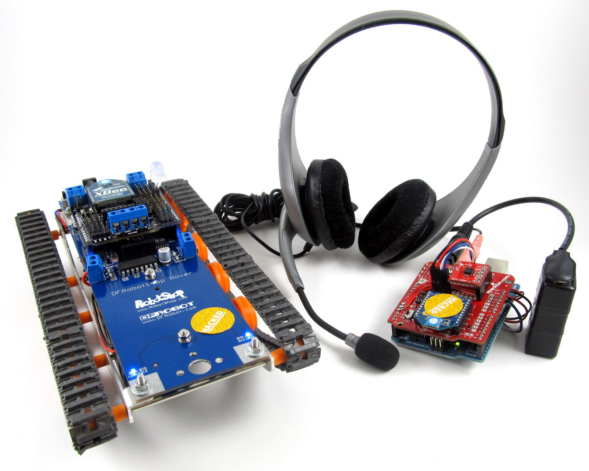

Experiências(){
Entrevista
Por: Felipe Brandão Costa e Jackson Andrade Goulart

printf: Que tipo de trabalho você realiza com dispositivos de Internet das Coisas?
Luís Fernando: Atualmente trabalhamos não com a aplicação final, mas sim com os componentes que podem ser utilizados para prototipar, ou mesmo produzir alguns dos dispositivos da Internet das Coisas. Os usuários desses componentes são as pequenas empresas ou indústrias inovadoras, que constantemente desenvolvem produtos ou projetos neste ambiente tão heterogêneo, e também o pessoal "do-it-yourself", que desenvolve projetos pessoais e alimenta a comunidade online de entusiastas da Internet das Coisas. Nós desenvolvemos módulos eletrônicos que podem ser utilizados para construir estes dispositivos. Exemplos destes módulos são: módulos de microcontrolador, interface USB, sensor de temperatura, conversor analógico-digital, acionamento para dispositivos da rede elétrica, módulo Ethernet, comunicação wireless e display LCD, entre outros. A utilização desses módulos em diferentes combinações permite a criação de muitas aplicações diferentes, sendo até difícil prevê-las.
printf: Qual sua experiência mais marcante com o Arduino?
Luís Fernando: Não consigo lembrar de uma experiência marcante isolada, mas eu já fiquei surpreso repetidas vezes com a facilidade de se prototipar uma aplicação com o Arduino. Quem já trabalhou com software embarcado no passado sabe que as ferramentas nessa área nunca foram muito acessíveis. Os compiladores eram quase sempre pagos, forçando muitos iniciantes a programar em assembly ou desistir; era necessário comprar ferramentas de hardware, nem sempre baratas e geralmente difíceis de usar; não era fácil encontrar componentes eletrônicos para complementar o projeto; a documentação online era escassa e a comunidade era pequena, entre outras coisas. Ao meu ver, a acessibilidade do Arduino aos iniciantes foi o que, de um jeito ou de outro, acabou resolvendo esses problemas, tornando-o tão popular. E desde que se aprenda bem a usá-lo, pode-se fazer com ele o mesmo que se faz usando ferramentas mais tradicionais.
printf: Fale-nos um pouco sobre o circuitar.com.br. Como surgiu e evoluiu a ideia desse empreendimento?
Luís Fernando: O que nós fazemos na Circuitar é desenvolver módulos de hardware e ferramentas de software que facilitam o desenvolvimento de projetos eletrônicos para profissionais, estudantes, pesquisadores e entusiastas da área. A idéia da empresa surgiu há cerca de 3 anos junto com meu sócio, o Gustavo Furlan, que é engenheiro eletricista e projetista de circuitos eletrônicos. Trabalhávamos juntos na época, para as mesmas empresas, de modo que eu desenvolvia software para o hardware que ele projetava. Ao ganharmos experiência, foram surgindo idéias de como fazer as coisas de um jeito que acreditávamos ser mais interessante, e acabamos criando a empresa para dar vazão a essas idéias e fazer as coisas que gostamos. Nessa época, começamos a ter contato com o Arduino e também achávamos que podíamos colocar em prática algumas idéias que unissem a nossa experiência na indústria com essa nova vertente mais acessível da computação embarcada. Sempre acreditamos na viabilidade comercial do negócio, mas a motivação principal nunca foi financeira.
}